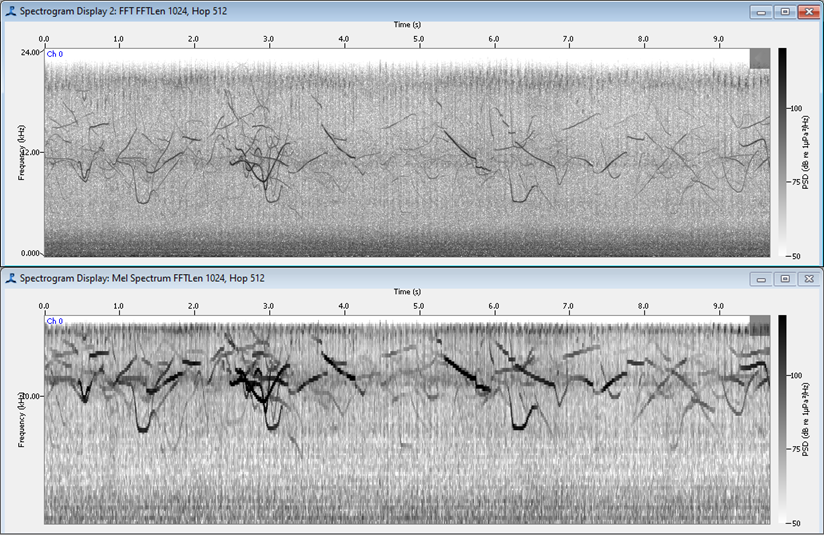

The Mel Spectrogram data can display on a normal Spectrogram Display.
The example below shows dolphin whistles on both a normal Spectrogram Display using the FFT data and also the display of the Mel Spectrogram data.

Our long term goal is that the Mel spectrogram data could be fed into any detector that would normally take FFT data. However, many detectors will need code updates to support this. Currently only the Whistle and Moan detector has been tested with Mel Spectrogram input.
Also note that phase information is lost when calculating the Mel
Spectrogram, so Mel Spectrogram data are not suitable for localisation
tasks based on Time
Difference of Arrival measurements.
Previous: Mel Spectrogram Configuration